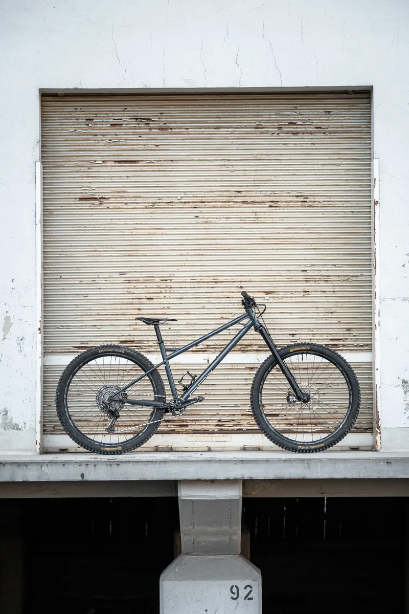
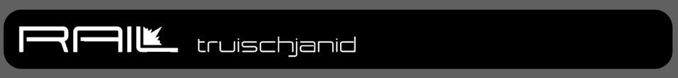
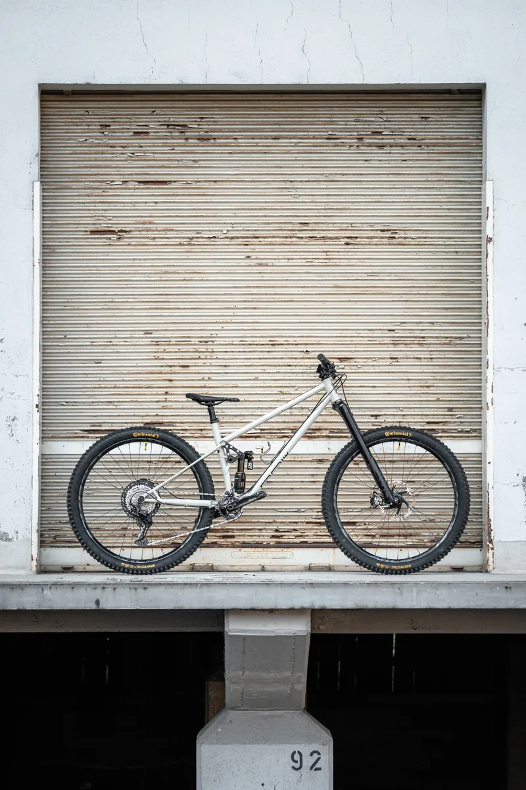
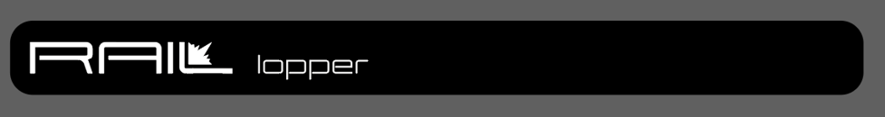
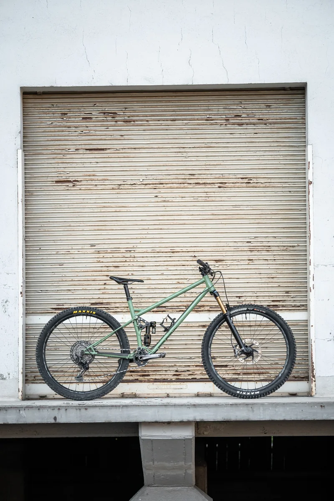
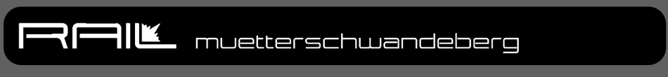
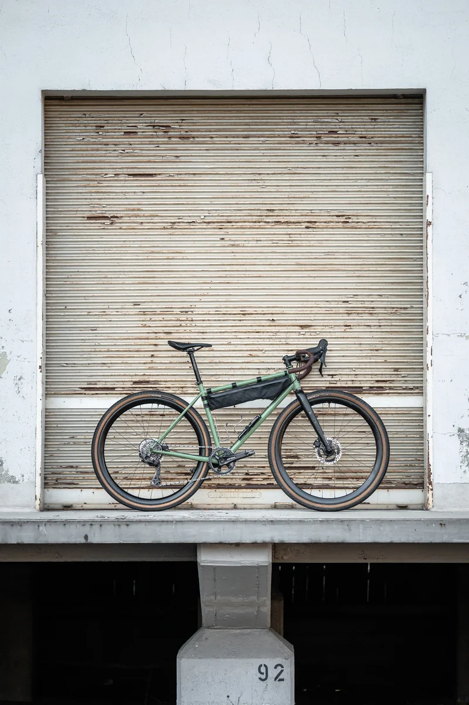
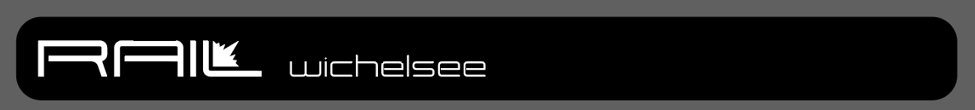

Modelle
Die RAIL Familie.
Von Gravel bis Enduro. Vier Modelle mit lokaler Verwurzelung.
Von Hand gefertigt.
Die Rail Familie wird aus 25CrMo4 von Hand WIG geschweisst. Die Rohre stammen von Reynolds und Columbus und wurden für die jeweiligen Belastungen sorgfältig ausgewählt. Die gefrästen Teile werden am Zürichsee hergestellt. Ausfallenden entsprechen dem UDH Standard. Alle Rahmen werden kathaphoretisch tauchlackiert und dann Pulverbeschichtet für ultimativen Schutz vor Korrosion und Abnützung. Das Tretlager wird mit Serienummer und Namen graviert, die Farbwahl steht dir frei.
Richtpreise gelten für den fertig beschichteten und gefrästen Rahmen, ohne MwSt.

RAIL Truischjanid – vollständige Seitenansicht
01 / Enduro Hardtail
Truischjanid

Warning: Long Vehicle
- Lange Kettenstreben und super flacher Steuerwinkel, steiler Sitzwinkel
- 160–170 mm Federweg
Ein Hardtail für dein nächstes Endurorennen, truisch ja nid!
Richtpreis: CHF 2’500
Richtpreise gelten für den fertig beschichteten und gefrästen Rahmen, ohne MwSt.
Modell anfragen
RAIL Lopper – vollständige Seitenansicht
02 / Trail / Enduro
Lopper

Das gewählte Designkonzept des abgestützten Eingelenkers besticht mit seiner Einfachheit und nutzt das 4130 Material optimal bei seinen Stärken.
Federweg hinten: 155 bis 160 mm Federweg (abhängig vom Dämpferhub und Kettenstrebenlänge).
Gross dimensionierte Rillenkugellager ermöglichen ein gutes Ansprechverhalten des Hinterbaus und eine lange Lebensdauer. Die Lager sind von Aussen sehr gut zugänglich und können optimal gepflegt werden. Sie sind im Hauptdrehpunkt in den Kettenstreben platziert, um die Distanz zwischen den Lagerpunkten zu maximieren und so das Hebelverhältnis bei Seitenlasten (Scandi Flick) zu optimieren.
Die Geometrie wird auf den Fahrer so angepasst, das eine ausgeglichene Schwerpunktlage in Bezug auf die Fahrgeometrie, als auch auf die Fahrwerkkinematik resultiert.
Die Längen des Hauptrahmens und der Kettenstreben, werden auf jeden Kunden angepasst, um eine perfekte Balance in Bezug auf Up- und Downhill zu erlangen.
Ein flacher Lenkwinkel nimmt Schläge an der Front besser auf und die Lenkgeometrie bleibt beim Anbremsen länger erhalten.
Federweg vorne: Gabeln mit 160 bis 170 mm
Ein Enduro -Trail Bike das auch gerne mal an einem Endurorennen mitmischt.
Richtpreis: CHF 3’100
Richtpreise gelten für den fertig beschichteten und gefrästen Rahmen ohne Federbein, ohne MwSt.
Modell anfragen
RAIL Muetterschwandeberg – vollständige Seitenansicht
03 / Down Country / Trail
Muetterschwandeberg

Basierend auf dem gleichen Fullsuspension- Konzept wie beim Lopper, gilt auch beim Muetterschwandeberg (MsB): Elegant Symplicity. Dabei werden die Materialeigenschaften von 4130 ideal ausgenutzt.
Durch den etwas geringeren Federweg und einem bewusst leicht höher gewählten Hauptdrehpunkt des Hinterbaus, fährt sich das MsB etwas straffer und spritziger, klettert mit offenem Dämpfer technische Trails hinauf und überrascht dabei mit viel Traktion.
Federweg hinten: 125 bis 130 mm Federweg (abhängig vom Dämpferhub und Kettenstrebenlänge).
Die Geometrie wird auf den Fahrer so angepasst, das eine ausgeglichene Schwerpunktlage in Bezug auf die Fahrgeometrie, als auch auf die Fahrwerkkinematik entsteht.
Längere Hauptrahmen und längere Kettenstreben, insbesondere bei grossen Personen, ergeben eine perfekte Balance in Bezug auf Up- und Downhill.
Ein tendenziell flacher Lenkwinkel nimmt Schläge an der Front besser auf und die Lenkgeometrie bleibt beim Anbremsen länger erhalten.
Federweg vorne: Gabeln mit 140 bis 150 mm
Ein Trail - DownCountry Bike - mit enorm breitem Einsatzbereich. Von verschlungenen Jura- Trails, über die zentralschweizer Pfade bis zu den Walliser Wegen, das MsB ist der ultimative Untersatz!
Richtpreis: CHF 3’100
Richtpreise gelten für den fertig beschichteten und gefrästen Rahmen ohne Federbein, ohne MwSt.
Modell anfragen
RAIL Wichelsee – vollständige Seitenansicht
04 / Gravel
Wichelsee

- Geometriefreiheit fast ohne Limiten
- Hardpoints nach freier Wahl
Klassisch, filigran, langlebig, ruhige Seele
Richtpreis: CHF 2’500
Richtpreise gelten für den fertig beschichteten und gefrästen Rahmen, ohne MwSt.
Modell anfragenLass uns über dein Bike sprechen.